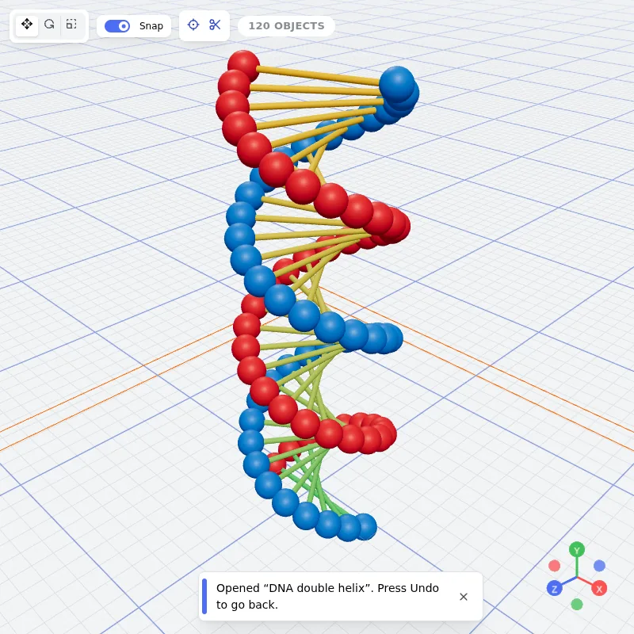
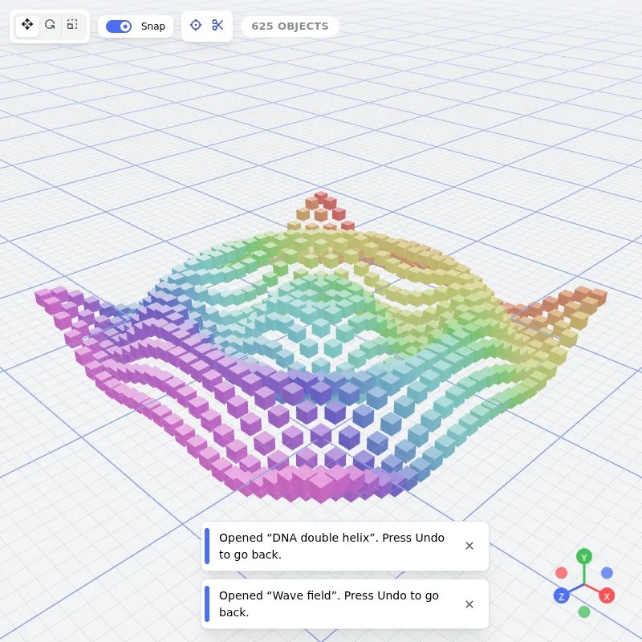
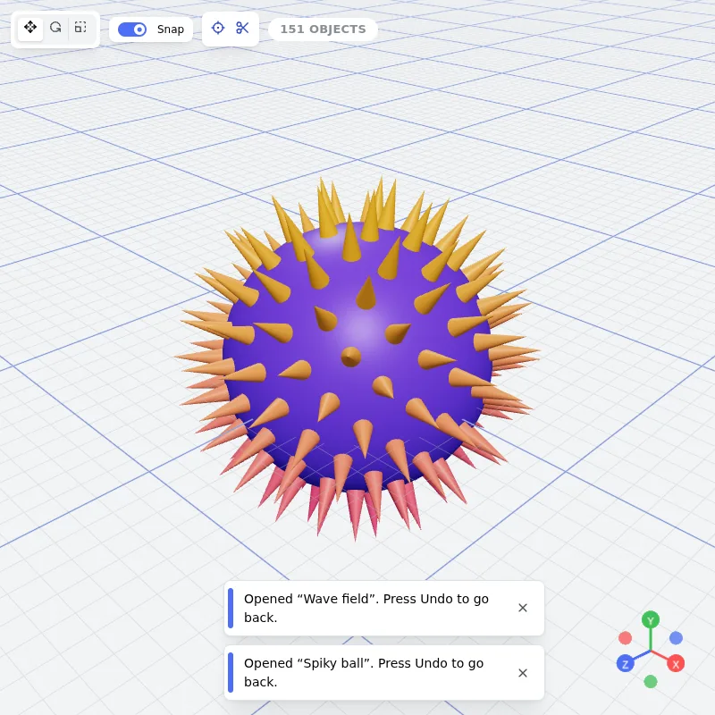
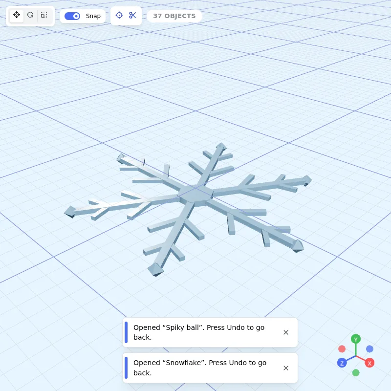
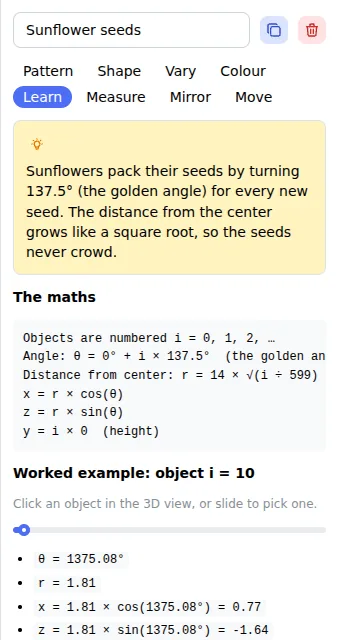
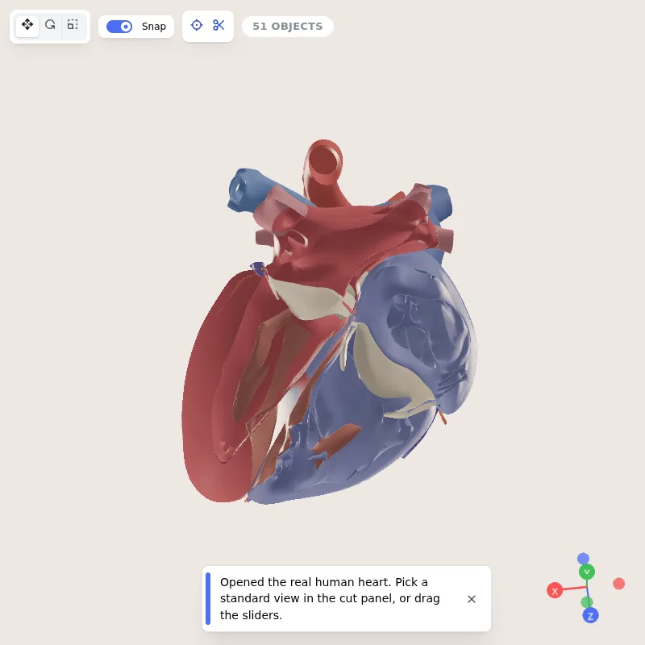
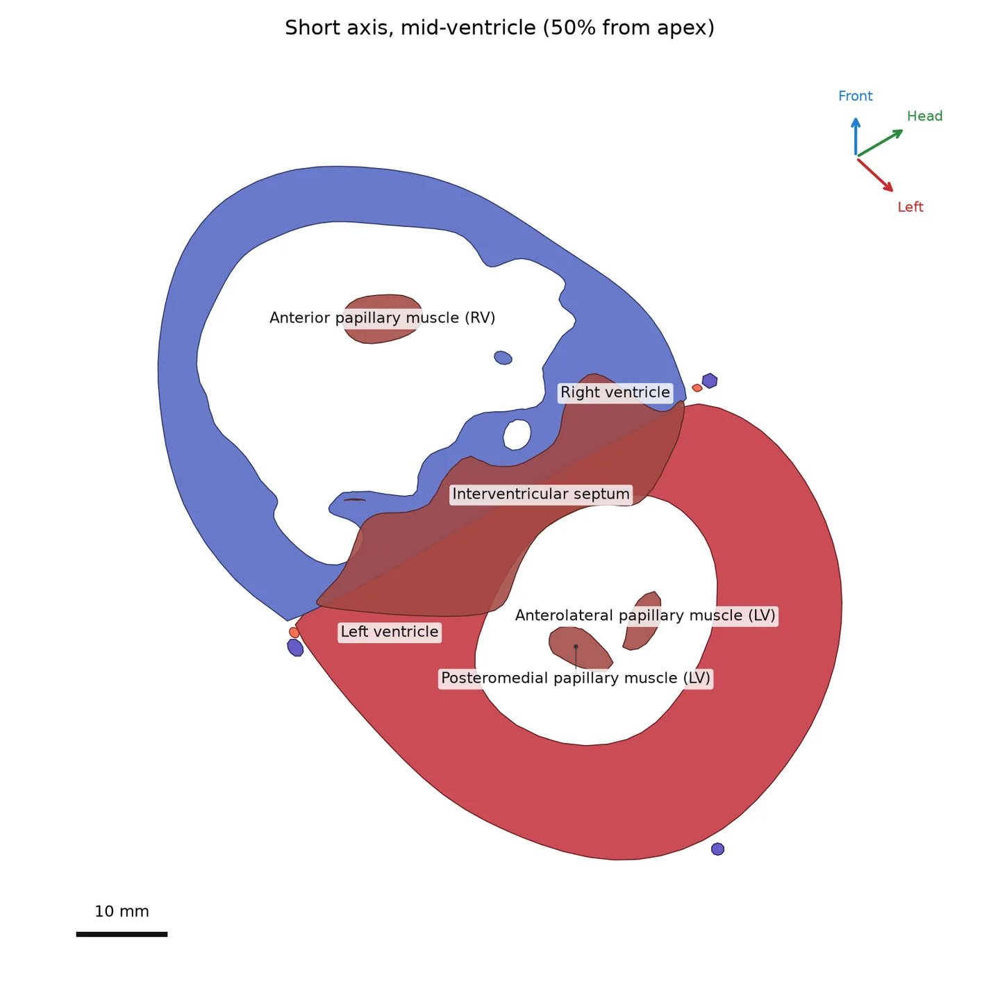

One object at a time
Placing 200 spheres in a spiral means creating, moving, rotating and resizing each one by hand. Beginners spend hours learning tools before they make anything.
For students, teachers and makers
Describe a pattern in plain words and let the maths place every object. Pick shapes by their width, height and radius, see the formulas behind them, and export real 3D files.
100 objects → Spiral → Radius 20 → Rotation 30° → Scale 0.5–2
Cuboid, sphere, cone, torus, prism, Platonic solids, 3D text, or your own spun and extruded outlines.
Spirals, grids, circles, waves, rings, spheres and random scatter place hundreds of copies in a click.
Every pattern explains itself, like θ = i × 30° and x = r cos θ, worked out for the object you click.
GLB for apps and games, STL for 3D printers, OBJ, a 4K picture, or a PDF project sheet for class.
Placing 200 spheres in a spiral means creating, moving, rotating and resizing each one by hand. Beginners spend hours learning tools before they make anything.
Write the rule once (how many, which pattern, which sizes) and the studio calculates every position, rotation and scale for you. Change a number and the whole artwork updates.
Each one is a few lines of maths you can read in the Learn tab.




MathMe never hides the numbers. Click any object and the Learn tab shows the formula that placed it, with your values filled in. Measure shows volume and surface area with full working, and how scaling by k changes area by k² and volume by k³.



Open a scan-based human heart from the Human Reference Atlas, with 51 named structures, and cut it like a surgeon’s textbook: four-chamber, three-chamber (LVOT), two-chamber and short-axis views, or any tilt you choose.
For education only. One reference heart, not a patient record. Anatomy: Human Reference Atlas, HuBMAP consortium (CC BY 4.0).
Free, in your browser, nothing to install. Your work saves itself as you go.
Open MathMe 3D Studio